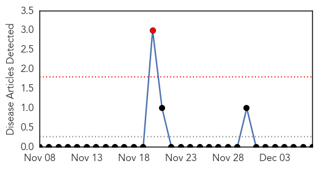
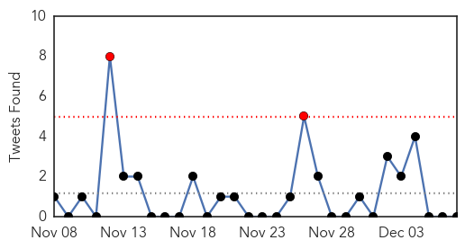

Yellow Fever
30-Day Web Trend
1 alerts, 0 warnings

30-Day Twitter Trend
0 alerts, 0 warnings

Article Locations

Article Confidences

Top Articles:
-
No articles found for Dec 07, 2014
Top Tweets:
-
No tweets found for Dec 07, 2014
Unknown
30-Day Web Trend
2 alerts, 0 warnings

30-Day Twitter Trend
2 alerts, 0 warnings

Article Locations
Article Confidences

Top Articles:
- 0.996
- Jaundice Outbreak: Water Samples Test Negative
- 0.934
- Girl’s blood sample sent to IMR for leptospirosis test - Nation
- 0.917
- Chicago Tribune
- 0.917
- Chicago Tribune
- 0.917
- Chicago Tribune
- 0.917
- Chicago Tribune
- 0.917
- Chicago Tribune
- 0.887
- Hundreds of cruise ship passengers ill and isolated
- 0.734
- Sales ban mulled as bird flu cases rise
- 0.733
- Passengers isolated to halt norovirus
- 0.685
- Fifth B.C. farm quarantined; up to 140,000 birds to be euthanized
- 0.664
- The search for the students will continue
- 0.643
- We May Have Reached The 'Apocalyptic Scenario' With Antibiotics
- 0.624
- Mujica receives award in Guadalajara
- 0.551
- Indian Babies Killed By Superbugs
- 0.520
- Jimmy John's and Cucumbers and E. coli O157:H7
- 0.518
- PRINCIPALS TO DISCIPLINE TEACHERS
Top Tweets:
- 0.600
- Operativo Caacupé: Fiscales y Técnicos realizan controles en puesto ubicado en la Terminal de Ómnibus de Asunc... http://t.co/XAXdA9kN1I